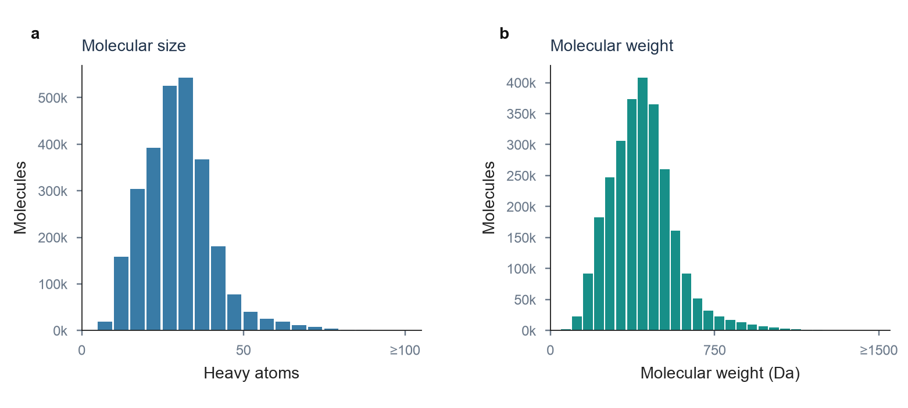

OpenMolSpec
OpenMolSpec
Chemical spectroscopy and deep learning
OpenMolSpec provides molecular spectroscopy datasets and Python tools for NMR, mass spectrometry, infrared and Raman spectroscopy. Load cleaned experimental data, predict spectra and molecular properties, identify structures, and train models on your own data.
The cleaned H/C NMR collection contains 2,678,511 molecular identities. Explore 31 tasks and 82 tutorials covering prediction, structure elucidation, training and spectroscopy.
Quick startDocumentationSource code中文手册
from openmolspec.dataset import molspectra
from openmolspec.model import NMRNet
data = molspectra("opendatalab_nmr", root="data/nmr")
sample = data["test"].head(1)[0]
model = NMRNet.from_pretrained(
"models", nucleus="13C", python="/path/to/nmr-env/bin/python")
result = model.predict(sample["smiles"])Examples
Each example includes the model input, its saved output and a tutorial explaining the workflow.
Structure elucidation from NMR

Predicting tandem mass spectra

IR and Raman from a molecular geometry

Predicting the HOMO–LUMO gap

Explore a molecule in 3D
Select a molecule from the HOMO–LUMO gap prediction examples. Drag to rotate and scroll to zoom. The model combines IR, Raman and H/C NMR spectra to predict the energy gap.
Loading molecular coordinates…
Data
The OpenMolSpec collection contains cleaned experimental spectra from OpenDataLab. External experimental and computed resources are available through the same dataset interface. The table describes the usable views and their contents.
| Dataset / view | Category | Description | Usable data |
|---|---|---|---|
| OpenDataLab · cleaned H/C NMR | Experimental · OpenMolSpec collection | Proton and carbon chemical shifts, molecular structures, formulas and experimental conditions; predefined train/validation/test files. | 2,678,511 molecules; 2,720,828 H spectra; 252,015 C spectra |
| OpenDataLab · 29Si | Experimental · OpenMolSpec collection | Silicon chemical shifts in ppm with silicon-containing molecular structures. | 726 spectra; 636 molecules |
| OpenDataLab · Raman | Experimental · OpenMolSpec collection | Measured Raman peak positions in cm⁻¹ and source experimental metadata. | 42 spectra; 39 molecules |
| OpenDataLab · 11B | Experimental · OpenMolSpec collection | Boron chemical shifts in ppm with boron-containing molecular structures. | 1,140 spectra; 1,017 molecules |
| OpenDataLab · MS | Experimental · OpenMolSpec collection | Measured m/z–intensity peak lists paired with standardized molecular structures. | 5,233 spectra; 4,980 molecules |
| OpenDataLab · 31P | Experimental · OpenMolSpec collection | Phosphorus chemical shifts in ppm with phosphorus-containing molecular structures. | 21,662 spectra; 18,238 molecules |
| OpenDataLab · 19F | Experimental · OpenMolSpec collection | Fluorine chemical shifts in ppm with fluorine-containing molecular structures. | 56,679 spectra; 50,402 molecules |
| OpenDataLab · IR | Experimental · OpenMolSpec collection | Measured infrared peak positions in cm⁻¹, paired with standardized molecular structures. | 177,759 spectra; 168,197 molecules |
| NMRexp v2 · H/C view | Experimental · external | Literature-derived proton and carbon NMR spectra, accessed through the filtered per-nucleus Parquet views. | 1,651,821 H spectra; 1,439,344 C spectra |
| OpenMolSpec · computed test view | Computed · OpenMolSpec benchmark | Paired IR/Raman arrays, H/C shifts, structures and electronic properties for molecular retrieval, generation and gap prediction. | 20,390 records; 16,728 canonical molecular structures |
| MassSpecGym v1.5 · prediction view | Experimental · external | Tandem mass spectra paired with molecular structures and the acquisition conditions used for forward spectrum prediction. | 119,029 prediction-ready spectra |
| MassBank · MS2 view | Experimental · external | Numerical tandem mass spectra with parseable molecular structures and repository acquisition metadata. | 120,512 spectra |
| QMe14S · paired IR/Raman view | Computed · external | Small molecules with 14-element coverage and finite, nonconstant paired infrared and Raman arrays. | 184,252 IR/Raman pairs |

Data fields, experimental conditions, access and train/test splits →
Tasks
Choose a spectroscopy family to see the available tasks. Each task guide explains the model, inputs, outputs and evaluation.
| Task | Input | Output |
|---|---|---|
| 1H chemical shift predictionnmr.forward.1H | Molecular structure; nucleus | Atom-indexed shifts (ppm) |
| 13C chemical shift predictionnmr.forward.13C | Molecular structure; nucleus | Atom-indexed shifts (ppm) |
| 19F chemical shift predictionnmr.forward.19F | Molecular structure; nucleus | Atom-indexed shifts (ppm) |
| 31P chemical shift predictionnmr.forward.31P | Molecular structure; nucleus | Atom-indexed shifts (ppm) |
| 11B chemical shift predictionnmr.forward.11B | Molecular structure; nucleus | Atom-indexed shifts (ppm) |
| 29Si chemical shift predictionnmr.forward.29Si | Molecular structure; nucleus | Atom-indexed shifts (ppm) |
| Spectrum-to-structure retrieval: ¹Hnmr.retrieval.h.s2m | NMR peaks; candidate structures | Ranked molecular structures |
| Structure-to-spectrum retrieval: ¹Hnmr.retrieval.h.m2s | Molecular structure; candidate spectra | Ranked spectra |
| Structure elucidation from ¹H NMRnmr.generation.h | NMR peaks; supplied molecular formula | SMILES candidates |
| Spectrum-to-structure retrieval: ¹³Cnmr.retrieval.c.s2m | NMR peaks; candidate structures | Ranked molecular structures |
| Structure-to-spectrum retrieval: ¹³Cnmr.retrieval.c.m2s | Molecular structure; candidate spectra | Ranked spectra |
| Structure elucidation from ¹³C NMRnmr.generation.c | NMR peaks; supplied molecular formula | SMILES candidates |
| Spectrum-to-structure retrieval: ¹H + ¹³Cnmr.retrieval.hc.s2m | NMR peaks; candidate structures | Ranked molecular structures |
| Structure-to-spectrum retrieval: ¹H + ¹³Cnmr.retrieval.hc.m2s | Molecular structure; candidate spectra | Ranked spectra |
| Structure elucidation from ¹H + ¹³C NMRnmr.generation.hc | NMR peaks; supplied molecular formula | SMILES candidates |
| HOMO–LUMO gap from IRvibrational.gap.ir | IR | HOMO–LUMO gap (eV) |
| HOMO–LUMO gap from Ramanvibrational.gap.raman | RAMAN | HOMO–LUMO gap (eV) |
| HOMO–LUMO gap from IR + Ramanvibrational.gap.ir_raman | IR, RAMAN | HOMO–LUMO gap (eV) |
| HOMO–LUMO gap from IR + Raman + NMRvibrational.gap.ir_raman_hc | IR, Raman, 1H, 13C | HOMO–LUMO gap (eV) |
| IR and Raman from a molecular geometryvibrational.forward | Elements and 3D Cartesian coordinates | IR and Raman spectra |
| Structure retrieval: IR + Ramanvibrational.retrieval | IR, Raman; candidate structures | Ranked molecular structures |
| Structure generation: IR + Ramanvibrational.generation | IR, Raman | SMILES candidates |
| Peak-to-atom assignmentnmr.assignment | Known structure; observed H/C peaks | Candidate peak-to-atom assignments |
| Cross-solvent chemical shift transfernmr.solvent_transfer | Structure; source shifts; solvent pair | Target shifts and reference provenance |
| Candidate reranking: IR + Ramanspectroscopy.reranking | IR, Raman; candidate structures | Ranked molecular structures |
| Structure retrieval: IR + Raman + NMRvibrational.retrieval.hc | IR, Raman, 1H, 13C; candidate structures | Ranked molecular structures |
| Structure generation: IR + Raman + NMRvibrational.generation.hc | IR, Raman, 1H, 13C | SMILES candidates |
| Candidate reranking: IR + Raman + NMRspectroscopy.reranking.hc | IR, Raman, 1H, 13C; candidate structures | Ranked molecular structures |
| MS/MS prediction with GLACIERms.forward.glacier | Structure; adduct; collision energy; instrument | MS/MS m/z–intensity peaks |
| MS/MS prediction with ICEBERGms.forward.iceberg | Structure; adduct; collision energy; instrument | MS/MS m/z–intensity peaks |
| MS/MS fragment annotationms.annotation.magma | Structure; MS/MS peaks; precursor conditions | Candidate fragment annotations |
Tutorials
Follow the code, inspect its output and use the same workflow with your own data.
SDK inference
Call NMRNet on a real molecular input and compare measured peaks.
Open executed tutorial →Training workflow
Prepare train/validation data and inspect an explicit training plan.
Open executed tutorial →NMR Fourier transform
Simulate an FID and recover its frequencies.
Open executed tutorial →NMR inversion
Recover a relaxation distribution from simulated noisy signals.
Open executed tutorial →IR / Raman broadening
Connect normal-mode activities to continuous spectra.
Open executed tutorial →MS isotope envelopes
Explore isotope probabilities and resolving power.
Open executed tutorial →Spectroscopy and agent tools
- NMR: chemical shifts, spin coupling, FID and Fourier transforms.
- Mass spectrometry: ion masses, adducts, isotope envelopes and fragmentation.
- IR and Raman: normal modes, selection rules and spectral broadening.
- NMR inversion: recover relaxation and diffusion distributions.
- Agent Harness: call spectroscopy tools from Python, the command line or MCP.
Gallery
Browse 32 figures showing model predictions, generated structures, peak assignments and data distributions. Select a figure to enlarge it.


References
- OpenDataLab. WanJuan MolSpectra, version 1.0.3. Experimental molecular spectroscopy dataset. Source ↗
- Wang, J.-J., Jin, Y., Zhi, C.-Y., et al. NMRexp: A database of 3.3 million experimental NMR spectra. Scientific Data 12, 1954 (2025). doi:10.1038/s41597-025-06245-5. Source ↗
- Yang, L., Yang, Z., Xie, J., Wang, Y., Gao, B., Fu, T., Wei, X., Sun, J., Wu, J., He, C., Li, Y. & Gu, Q. NMRTrans: Structure Elucidation from Experimental NMR Spectra via Set Transformers. arXiv:2602.10158 (2026). Source ↗
- Fang, Z., Yang, C., Yu, H., Luo, H., He, H., Xie, J., Yang, Z. & Xia, J. NMRGym: A Comprehensive Benchmark for Nuclear Magnetic Resonance Based Molecular Structure Elucidation. arXiv:2601.15763 (2026). Source ↗
- Bushuiev, R., Bushuiev, A., de Jonge, N. F., Young, A., et al. MassSpecGym: A benchmark for the discovery and identification of molecules. Advances in Neural Information Processing Systems 37, Datasets and Benchmarks Track (2024). arXiv:2410.23326. Source ↗
- Horai, H., Arita, M., Kanaya, S., et al. MassBank: a public repository for sharing mass spectral data for life sciences. Journal of Mass Spectrometry 45, 703–714 (2010). doi:10.1002/jms.1777. Source ↗
- Zou, Z., Zhang, Y., Liang, L., Wei, M., Leng, J., Jiang, J., Luo, Y. & Hu, W. A deep learning model for predicting selected organic molecular spectra. Nature Computational Science 3, 957–964 (2023). doi:10.1038/s43588-023-00550-y. Source ↗
- Yuan, M., Zou, Z. & Hu, W. QMe14S, A Comprehensive and Efficient Spectral Dataset for Small Organic Molecules. arXiv:2501.18876 (2025). Source ↗
- OpenMolSpec contributors. OpenMolSpec: Chemical spectroscopy datasets, models and learning workflows. Software release v1.0 (2026). Source ↗